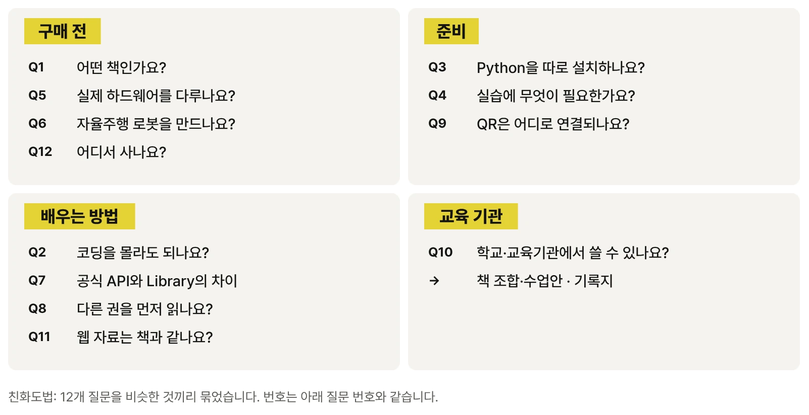

자주 묻는 질문

책을 선택하기 전에 확인하면 좋은 질문을 정리했습니다.
Q1. 이 책은 어떤 책인가요?
RoboCo에서 완성된 4륜 독립 구동·독립 조향 로봇을 먼저 움직이고, 키 입력이 제어를 거쳐 실제 움직임이 되는 과정을 추적하는 피지컬 AI 로봇 제어 실습서입니다. 피지컬 AI로 배우는 RoboCo 시리즈의 CORE-01로, 이동과 제어(MOVE / CONTROL)를 다룹니다.
Q2. 코딩을 몰라도 시작할 수 있나요?
네. CHAPTER 01은 코드 없이 Controls Mapping으로 직접 조종합니다. Python은 CHAPTER 02부터 제공 시작 파일을 실행하는 데서 시작해, CHAPTER 11 이후 실제 로봇 설정과 연결해 필요한 만큼 다룹니다. 다만 Python 문법 전체를 가르치는 입문서는 아닙니다.
Q3. Python을 따로 설치해야 하나요?
기본 실습에는 필요하지 않습니다. CORE-01 Script는 RoboCo 안의 Python 실행 환경에서 동작합니다. 시작 파일과 Library를 읽거나 수정할 코드 편집기는 있으면 편리합니다.
Q4. 실습에 무엇이 필요한가요?
Steam용 RoboCo와 CORE-01 실습 파일(Robot File 2종, 시작 파일 c01_start.py, Educational Library C01_Lib)이 필요합니다. 로봇 파일·시작 파일·Library와 실험·미션 기록지는 실습 파일 페이지에서 내려받습니다. RoboCo의 지원 OS·사양·지원 언어·가격은 Steam에서 최신 정보를 확인하세요.
Q5. 실제 로봇 하드웨어를 다루나요?
아닙니다. RoboCo는 게임 기반 로봇 Sandbox이자 물리 시뮬레이션 환경입니다. 배터리, 모터 발열, 배선, 통신 지연 같은 하드웨어 문제를 그대로 재현하지 않으므로, 책의 수치를 실제 하드웨어 성능으로 해석하지 않습니다. 대신 같은 조건으로 반복 실행하고 값 하나만 바꿔 비교하는 검증 방법을 익힙니다.
Q6. AI가 스스로 판단하는 자율주행 로봇을 만드나요?
아닙니다. CORE-01의 최종 미션은 정해 둔 동작과 시간을 순서대로 실행하는 시간 기반 경로입니다. 센서로 감지하고 반응하는 구조는 CORE-02, 상태와 판단을 이용한 자율 행동은 QUAD-02에서 이어집니다. CORE-01은 그 아래에 놓이는 입력·제어·Actuator·관찰의 뼈대를 다룹니다.
Q7. RoboCo 공식 API와 Educational Library는 어떻게 다른가요?
DCMotor, ServoMotor, LED, TextScreen, Input은 RoboCo가 제공하는 공식 Python API입니다. Robot.forward(), Mission처럼 여러 공식 API 호출을 한 동작으로 묶은 것은 저자가 제공하는 CORE-01 Educational Library입니다. 책에서는 두 계층을 같은 API처럼 섞어 쓰지 않으며, 오류가 났을 때 어느 계층을 확인할지도 이 구분으로 정합니다.
Q8. 다른 권을 먼저 읽어야 하나요?
아닙니다. CORE-01은 독립 입문 권입니다. 각 권은 해당 권의 Robot File·시작 파일·Library만으로 실행할 수 있도록 구성하며, 여섯 권을 반드시 순서대로 읽을 필요는 없습니다.
Q9. 책의 QR 코드는 어디로 연결되나요?
QR 코드는 YouTube 주소를 직접 가리키지 않고 ronniekimbooks.com/ko/books/book-005/v/C01-25-00/처럼 영상 ID별 고정 주소로 연결됩니다. 영상 플랫폼의 주소가 바뀌어도 책에 인쇄된 QR은 그대로 사용할 수 있습니다.
Q10. 학교나 교육기관에서 활용할 수 있나요?
같은 Robot File과 시작 파일, 실험 기록지를 사용하므로 같은 조건에서 반복 실행하고 변경 전후를 비교하는 실습을 운영하기 좋습니다. 기간과 목표에 따라 필요한 PART와 미션을 선택할 수 있습니다.
Q11. 웹 자료에는 무엇이 있나요? 책 내용과 같은가요?
웹에는 책의 설명을 옮기지 않습니다. 종이에는 담을 수 없는 실행 영상, 같은 조건에서 값 하나만 바꾼 비교 영상, 실패 장면, 설치 화면 녹화, 웹 전용 도전 미션을 모으고, 실습 파일 다운로드와 정오표·Version 정보를 제공합니다. 영상에서 본 움직임이 왜 그렇게 나오는지와 어떻게 바꾸는지는 책의 해당 Chapter에서 다룹니다.
Q12. 어디서 구매할 수 있나요?
종이책과 전자책을 온라인 서점에서 구매할 수 있습니다. 서점별 링크는 구매하기 페이지에 모아 두었습니다.